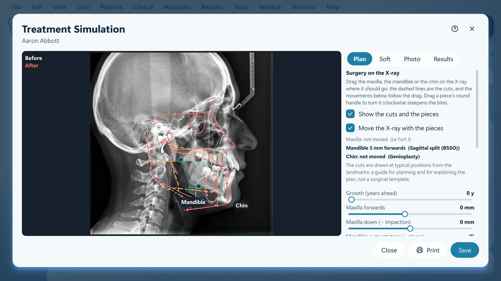
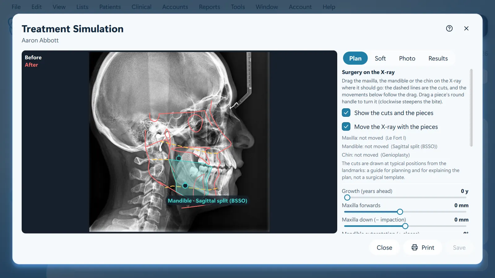
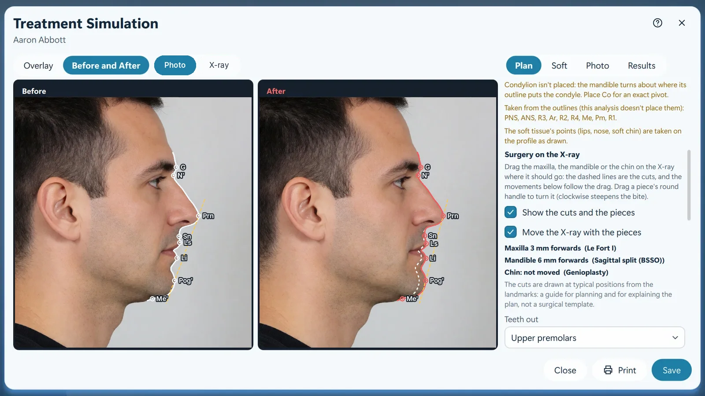
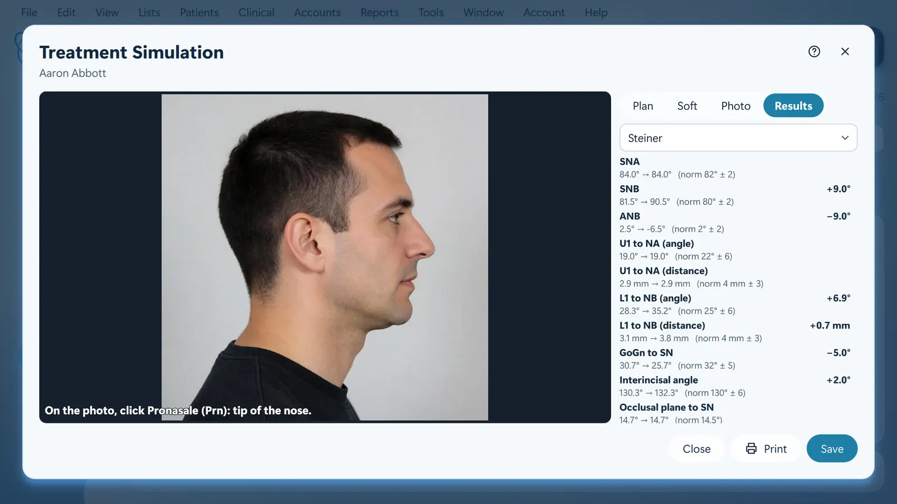

01 / 04 · Treatment simulation Standard with Ortho · add-on for Dental
Treatment simulation (VTO / STO)
Ceph window → Simulate
Plan treatment on the tracing and see the before (dashed) and after (red) over the X-ray.
- Growth in years, the maxilla forwards and down, the mandible's autorotation, forwards and down, the chin, and the upper and lower incisors moved bodily or tipped.
- Half a millimetre or half a degree at a time.
- The soft tissue follows its hard tissue by response ratios set for the patient.
- Teeth out: upper or lower premolars, both, or a lower incisor, with the incisors moved back as closing the spaces typically does.
- Works with any analysis. Landmarks the plan needs that your analysis doesn't place are taken from the tracing's outlines and named in the notes.
- Results compares the analysis before and after.
- A guide for planning and presentation, not a prediction.

02 / 04 · Treatment simulation Standard with Ortho · add-on for Dental
On-screen surgery
Simulate → Plan
Draw the cuts and move the pieces of the patient's own X-ray.
- Le Fort I, sagittal split (BSSO) and genioplasty lines worked out from the landmarks.
- Point at the maxilla, mandible or chin and drag it. The drag becomes the plan's millimetres along the Frankfort plane, with a label such as “Mandible 6 mm forwards”.
- The X-ray's own pieces move, and the gap left behind is darkened.
- Turn the maxilla or mandible by a round handle about the incisor tip, up to 10° each way, or with sliders.
- The cuts are a guide for planning and explaining, not a surgical template.

03 / 04 · Treatment simulation Standard with Ortho · add-on for Dental
Before and after, side by side
Simulate → Before and After
Show the patient the difference in one picture.
- The patient's profile photo before, beside the same photo morphed to follow the plan.
- The tracing sits on both: the soft-tissue profile and its points, with the E-line from nose tip to chin. After is drawn in red over the dashed line of before.
- Switch to X-ray to show the ceph before and after instead, with its pieces moved.
- Printed side by side too.
- The morph is a picture for talking a plan through, not a promise of the result.

04 / 04 · Treatment simulation Standard with Ortho · add-on for Dental
The profile photo: register, line up and morph
Simulate → Photo
Lay the patient's profile photo over the ceph and bend it to follow the plan.
- Register by clicking the nose tip, subnasale and soft chin.
- Move, turn and size the photo to line it up closer, with an opacity slider to see both.
- Morph the photo to the plan: every movement shows on the face.
- A picture for talking a plan through, not a promise of the result.
